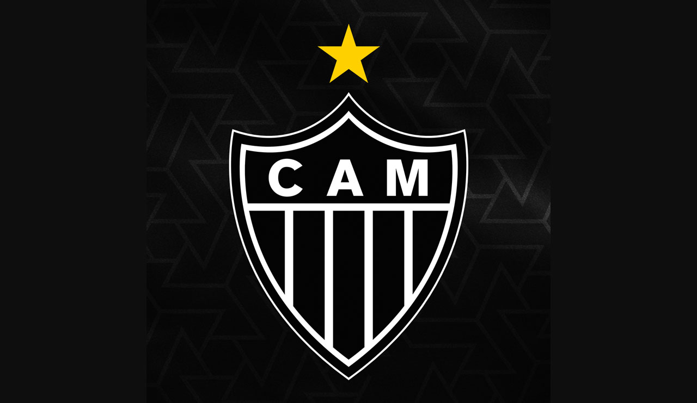

Atlético Mineiro: A História de um Gigante Forjado na Raça e na Paixão!
Torcedor atleticano, prepare o coração, porque a história que você carrega no peito é feita de suor, raça, resistência e glória! O Clube Atlético Mineiro, nosso Galo querido, nasceu no dia 25 de março de 1908, em Belo Horizonte, pelas mãos de um grupo de estudantes idealistas que sequer imaginavam o tamanho da paixão que estavam colocando em movimento. O que começou como um sonho virou religião.
Pioneiro em Minas Gerais, o Galo é símbolo de tradição e bravura. Foi o primeiro campeão mineiro, em 1915, e desde então passou a carregar a missão de representar o povo com dignidade e luta. Mas não é só pelos títulos que somos grandes. O Atlético sempre foi o time da massa, da arquibancada pulsante, da camisa suada e do grito entalado que ecoa em cada estádio do Brasil.
E como esquecer o ano mágico de 1971? Foi ali que o Atlético eternizou seu nome como o primeiro campeão do Campeonato Brasileiro, com um timaço comandado por Telê Santana e liderado pelo eterno ídolo Dario, o Dadá Maravilha. Um título histórico que selou nosso destino de clube gigante.
O Galo viveu altos e baixos, mas nunca caiu. Porque aqui, se não for com emoção, não é Atlético! E quando a história parecia ingrata, veio a Libertadores de 2013. Sob o comando de Cuca, com Ronaldinho, Tardelli, Victor ("São Victor!") e tantos outros guerreiros, o Galo conquistou a América com viradas épicas, pênaltis impossíveis e a fé de uma torcida que nunca deixou de acreditar. Foi o "Eu Acredito" que virou milagre!
Depois vieram a Copa do Brasil de 2014, a Tríplice Coroa de 2021 (Brasileirão, Copa do Brasil e Mineiro), e o orgulho de ver o Galo sempre brigando entre os grandes. Hoje, com a Arena MRV como novo lar, o Atlético entra em uma nova era. Uma era de conquistas ainda maiores, mas sempre com os pés fincados na história gloriosa que você, torcedor, ajuda a escrever a cada jogo.
Porque ser atleticano não é apenas torcer — é um estado de espírito. É levantar depois de cada queda, cantar mesmo na derrota, e explodir de alegria nas vitórias. O Galo não é só um clube. O Galo é o coração pulsante de milhões.
Aqui é Galo! Sempre foi. Sempre será.
